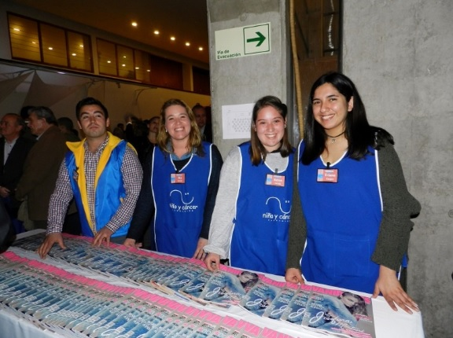
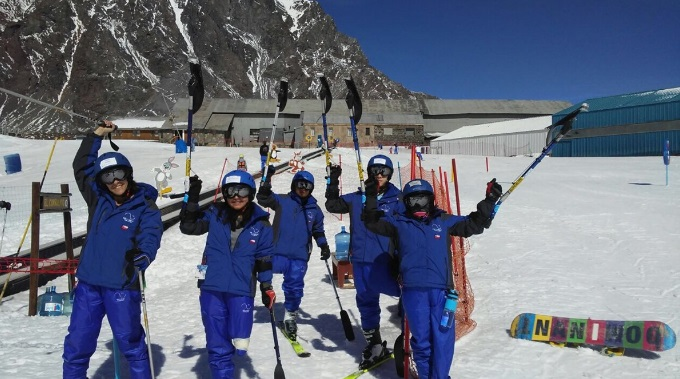
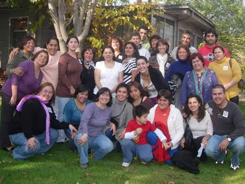

Noticias
Becas de Estudio

El objetivo de este proyecto es beneficiar a jóvenes recuperados de cáncer con becas académicas, para lograr la continuidad de estudios pendientes y obtener una profesión futura y reinserción en la sociedad.
Las becas podrán atender a los jóvenes con estudios universitarios, técnicos profesionales o de centros de formación técnica. Así también podrán tener alcances parciales y en ocasiones especiales, totales.
El año 2018 se otorgaron un total de 28 becas de las cuales 15 corresponden alumnos antiguos y 13 son para alumnos que inician sus estudios superiores este año 2018.
Para que estas becas sean bien utilizadas, sean objetivas y sean supervisadas, elaboramos requisitos básicos y similares a los utilizados en el resto de las instituciones que entregan estos beneficios.
Ver instructivo de postulación 2018(Formato PDF)
Para mayor información o en caso de cualquier duda, consultar a:
Carolina Escudero P.
Asistente del Directorio
Fundación Niño y Cáncer
Actividades infoUna noche de música, sorpresas y generosidad
Con gran éxito se desarrolló nuestra Tallarinata de Amor y Sonrisas el 30 de agosto en el Estadio del Banco Central.
La velada estuvo animada por nuestro amigo y permanente colaborador Checho Hirane, además de contar con la extraordinaria presentación de Andrea Tessa y otros artistas invitados.
Agradecemos a todos los asistentes que compartieron, donaron dinero y tiempo a esta noble causa, cuyo principal objetivo es entregar una vida más llevadera a los con cáncer atendidos a en los hospitales públicos de nuestro país.
Empresas y colaboradores especiales que realizaron donaciones y regalos que hicieron posible llevar a cabo este evento:
Estadio del Banco Central, Antofagasta Minerals S.A., Nahmias Desarrollo Inmobiliario, A3D Chile, Radisson Blu, CCU, Falabella, Agencia One Stop, Aerolínea Sky, Trendy, Ópticas GMO, Rotter y Kraus, Therapy Boutique, Doc Popcorn, Tienda Ditego, Carola González - Boutique, Baños del Corazón, Paris Alto Las Condes, Hotel Presidente, Mario Moure - Perfumes, L’Oréal, Interdessign, Farmacias Knop, Tamango, Cocina de Javier, Pastelería Las Hermanas, Tiendas Corona, Laboratorio Valma, Ellus, Iregua, Hotel Regal Pacific, Hotel Kennedy, Textiles Lanabel, Cinemark, Hotel Plaza San Francisco, Coco Legrand, La Fête, Viña Cousiño Macul, Tutte Matute, Donde Gilberto, Mister Jack, Bow Spa, La Rambla, Stefan Joyero, Salón Mauricio Jiranek, Mery Satt, Laboratorio Prater, Lounge, AB Küpfer Pisos, Hotel Frutillar, Ti-5, Óptica Tabancura, Boutique R4, Alonso Olive Oil, AHF joyas.
Y especiales agradecimientos a los voluntarios, socios, directorio, amigos y todos los que de una u otra menera se involucraron para hacer posible el éxito de nuestra Tallarinata de Amor y Sonrisas.
Actividades infoMontaña de la Alegría 2017
Proyecto recreativo y psicoterapéutico que se realiza desde el año 2002 Se traduce en "Una Terapia para el Alma".
Taller de Ski
Se realizó como todos los años en Portillo del 21 al 25 de agosto y contó con la participación de 7 jóvenes chilenos, 2 ecuatorianos y 1 de España. Todos amputados de una extremidad inferior, como secuela de su enfermedad.
El objetivo de este Programa es demostrar a los participantes, que su impedimento físico no los limita para plantearse y superar desafíos, tales como el aprender a esquiar y que con optimismo y fuerza lograrán todos los objetivos que se propongan en su vida.
El coordinador responsable y voluntario de la FNyC es Patricio Morandé, instructor de ski, que también sufrió una amputación producto del cáncer siendo muy joven. Participó en las Olimpiadas para Discapacitados organizadas en Salt Lake City (EE.UU.) el año 2002, en la que obtuvo el puesto N°11.
Fueron acompañados durante los 5 días que permanecieron en Portillo, por la Voluntaria de la FNyC y sonrisóloga Susana Alegría, Psicóloga.
La Fundación Niño y Cáncer cubrió todos los gastos: alojamiento, alimentación, instructores de ski, traslados, equipos especiales y vestimenta adecuada (ropa térmica, antiparras, cascos, guantes, botas, entre otros).
Nuestros agradecimientos especiales a:
- Hotel Portillo, que facilitó equipos y tickets de andarivel
- Buses Cabrera, por el traslado a los participantes a Portillo
- Hotel Radisson-La Dehesa, por el alojamiento de todos los participantes el 20 de agosto y a su regreso el 25 de agosto
- Escuela de Montaña de Portillo, ya que sin su apoyo no habría sido posible realizar el Taller de Ski – 2017.
Agradecimiento a nuestros colaboradores y socios
Fundación Niño y Cáncer agradece sinceramente a empresas, socios, particulares, colegios y a cada uno de ustedes por su valiosa colaboración prestada durante el periodo 2016.
Para la tarea que nuestra Fundación realiza, el aporte que ustedes han realizado, significa la posibilidad de dar continuidad a nuestros proyectos en beneficios de los niños que son afectados de una enfermedad altamente impactante, como es el cáncer.
Sepan que las ayudas por ustedes proporcionadas se destinó al financiamiento de Becas de Estudios Superiores, Departamentos de Acogida, Mejoramiento de las instalaciones hospitalarias, actividades recreativas, entre otras actividades que la Fundación realiza permanentemente.
Deseamos que este año 2017 sea un excelente año para ustedes y para sus familias y les motivamos, para que esta relación que hemos establecido, continúe creciendo y multiplicándose.
Actividades infoAgradecimiento a nuestros colaboradores y socios
Fundación Niño y Cáncer agradece sinceramente a empresas, socios, particulares, colegios y a cada uno de ustedes por su valiosa colaboración prestada durante el periodo 2016.
Para la tarea que nuestra Fundación realiza, el aporte que ustedes han realizado, significa la posibilidad de dar continuidad a nuestros proyectos en beneficios de los niños que son afectados de una enfermedad altamente impactante, como es el cáncer.
Sepan que las ayudas por ustedes proporcionadas se destinó al financiamiento de Becas de Estudios Superiores, Departamentos de Acogida, Mejoramiento de las instalaciones hospitalarias, actividades recreativas, entre otras actividades que la Fundación realiza permanentemente.
Deseamos que este año 2017 sea un excelente año para ustedes y para sus familias y les motivamos, para que esta relación que hemos establecido, continúe creciendo y multiplicándose.
Actividades infoAgredecimiento del grupo de familias "Aprendiendo a revivir
En el año 2009, comenzamos a realizar reuniones trimestrales con los padres cuyos hijos habían fallecido a causa del cáncer infantil; al principio fue muy dificil, no sabíamos muy bien que ibamos a hacer, ni como lo ibamos a llevar a cabo. Al mes de noviembre del 2014, hemos realizado 18 encuentros, donde en un principio solo participaban las madres.
Hoy son familias, las que participan de cada encuentro, el grupo decidió llamarse "Aprendiendo a revivir", cada reunión a sido un éxito, porque cada miembro de la familia, a encontrado su espacio, donde poder hablar y expresar cada una de sus emociones, sin temor a ser juzgado, donde encuentran un lugar y un tiempo de dedicación exclusiva para conversar con otra madre, otro padre, otro abuelo(a) que vivio la misma experiencia que ella o él, donde pueden conversar con otra persona que "Sí les entiende", que "Sí tiene derecho a decirle: Yo sí te entiendo, porque a mí también se me murio un hijo"
Solo tenemos palabras de agradecimiento para cada uno de ustedes, y para Fundación Niño y Cáncer, porque sin su ayuda, muchos padres habrían quedado sin la posibilidad de participar de estas reuniones,simplemente porque no cuentan con los medios económicos para trasladarse entre cuidades, hasta el lugar de la reunión.
Un abrazo, y nuestra gratitud.
Equipo organizador "Aprendiendo a revivir"
- Myrna Aedo, Dama de verde
- Susana Alegría, Sonrisóloga
- Eugenia Ahumada, Psicóloga
- Violeta Cádiz, Psicologa
- Carola Garabano, Sonrisóloga
- Inés Ibaceta, Dama de verde
- Paula Inostroza, COAYUDA
- Ximena Mazuela, Kinesióloga
- Josefina Morales, Enfermera
- Georgina Moreno, Voluntaria
- Chery Palma, Enfermera
- Ariel Parra, Quimico farmacéutico
- Natalie Rodriguez, Médico
- Fanny Sepúlveda, Enfermera.